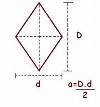

Romboedro
O romboedro regular é um sólido tridimensional que possui 12 arestas iguais e 6 faces, cada uma em formato de losango.
Calcular área
Para calcular a área de superfície de um romboedro regular, você precisa calcular a área de uma das faces losangulares e, em seguida, multiplicar pelo número de faces (6).
Onde:
- D é a diagonal maior do losango.
- b é a diagonal menor do losango.
Suponha que o romboedro regular tenha uma diagonal maior de 6 unidades e uma diagonal menor de 4 unidades.
Primeiro, calcule a área de uma face losangular:
Área do losango = 6 x 4 / 2
Área do losango = 24 / 2
Área do losango = 12
Agora, calcule a área de superfície do romboedro regular:
Área do romboedro = 6 x 12
Área do romboedro = 72
Resultado:
Voltar